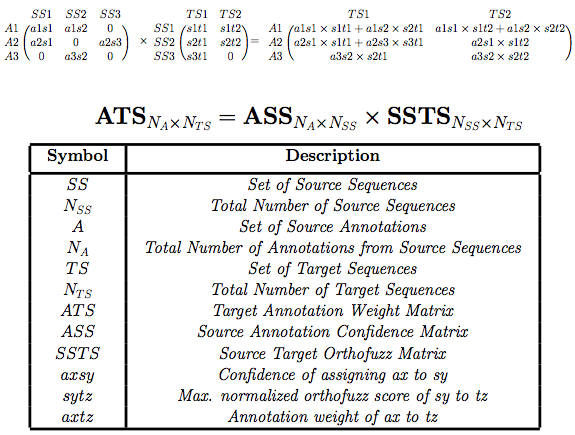

PredictInteractions.jar:
StringDB Interaction Data has a collection of known and predicted protein interactions including direct (physical) and indirect (functional) associations derived from genomic context, high-throughput experiments, (Conserved) Coexpression and literature mining. They have quantitatively integrated data from the sources for different organisms and transfered information between them based on orthology when applicable.As of October 15th, 2015, the database covers 9'643'763 proteins from 2'031 organisms.
The interaction scores were normalized by 1000 (Max possible score) to scale them to (0-1) level needed for the software.
C0-C3 are the contigs identified as homologs of Query Sets Q1 and Q2. E(X) is the normalized expression level of X. qxcy is the within species normalized orthofuzzscore (qx,cy) obtained by querying the network using the query set Q.

Figure : Annotation flow network: A1-A3 are annotations of source sequences S1, S2 and S3. axsy represents the user-defined confidence of the annotation ax to be associated with sequence sy. sxty is the maximum score normalized orthofuzz score(sx,ty) obtained by querying the pairwise sequence similarity network using sx.
As shown in the figure X, the annotation scoring and assignment can be defined as a problem of multiplying the source annotation matrix with the orthofuzz matrix as shown in the figure X.
{kind=link}
{kind=link}